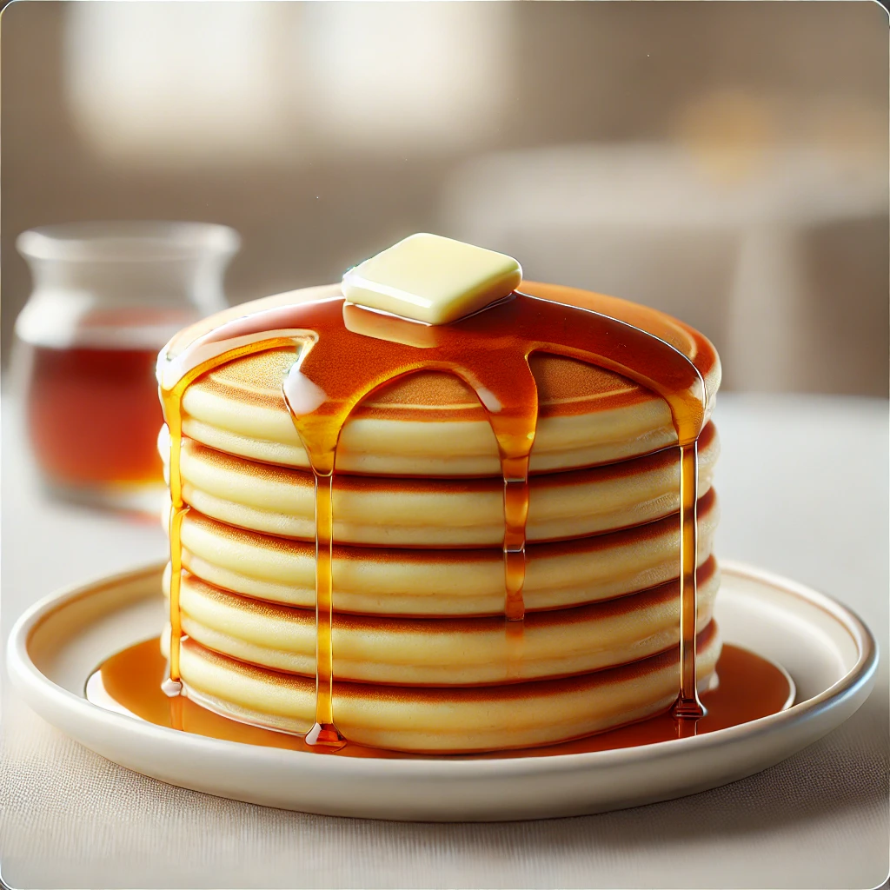

🥞 Pancakes

Description
Fluffy and golden pancakes, perfect for breakfast, topped with butter and syrup.
Ingredients
1 cup all-purpose flour
2 tablespoons sugar
1 teaspoon baking powder
1/2 teaspoon baking soda
1/4 teaspoon salt
3/4 cup milk
1 egg
2 tablespoons melted butter
1 teaspoon vanilla extract
Steps
In a bowl, whisk together the flour, sugar, baking powder, baking soda, and salt.
In another bowl, mix the milk, egg, melted butter, and vanilla.
Combine the wet and dry ingredients, stirring until just mixed.
Heat a non-stick pan over medium heat and lightly grease it.
Pour small amounts of batter onto the pan and cook until bubbles form.
Flip and cook until golden brown on both sides.
Serve warm with butter and syrup.
🏠 Home